Disponível para estágio — Presencial ou Remoto
Isadora Roosevelt Eler
Estudante de ADS · Buscando Estágio
Estudante do 4º período de Análise e Desenvolvimento de Sistemas na UVV, explorando interfaces, web e inteligência artificial. Aprendo construindo: meus projetos vão de telas no Figma a um detector de objetos em Python. Busco meu primeiro estágio para crescer na prática.
Sobre
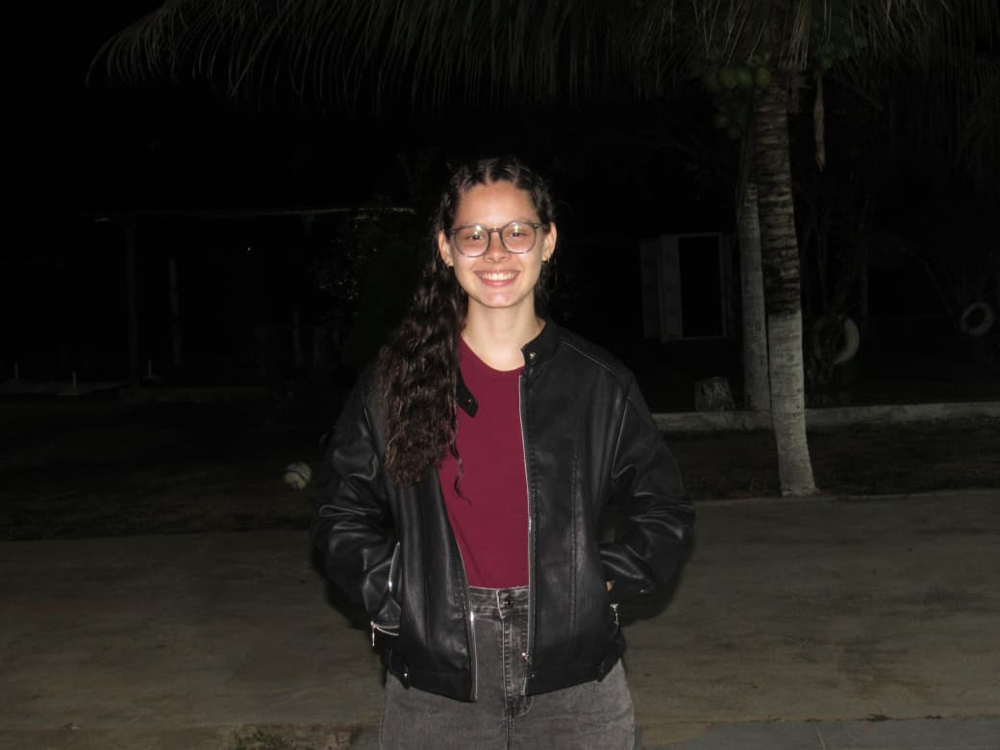
Sou estudante de ADS na UVV e ainda estou descobrindo em qual área da tecnologia quero me aprofundar. Por isso meus projetos são variados: interfaces no Figma, uma landing page em HTML, CSS e JavaScript e um detector de objetos com inteligência artificial.
Gosto de aprender fazendo. Quando algo não funciona, investigo até entender o motivo. No detector de produtos, por exemplo, testei uma solução que não melhorou o resultado e usei isso para descobrir que o gargalo estava na variedade das fotos.
Projetos
Projetos selecionados
Do código à interface. Clique em um projeto para ver como ele foi feito.
Inteligência artificial / Python
Detector de produtos de higiene
Trabalho em grupo na UVV (4 pessoas): um modelo de visão
computacional que identifica 12 tipos de produto de higiene
pessoal em fotos, como shampoo, desodorante, pasta de dente e
perfume. Na coleta, fiquei com os produtos de banho, proteção,
álcool em gel e sabonetes, e fui responsável por treinar, avaliar
e analisar o modelo.
Usamos a rede YOLOv7 com fine-tuning a partir de pesos
pré-treinados na base COCO, treinada no Google Colab por 100
épocas (imagens de 640 px, lotes de 16). As imagens foram
rotuladas no MakeSense.ai em formato YOLO: um arquivo de texto por
foto, com a classe e a posição da caixa de cada objeto.
O que descobri
- Treinar do zero deu mAP@.5 de 0,16. Partir de pesos pré-treinados (transfer learning) chegou a 0,76 na validação e 0,78 no teste, com recall de 84%.
- Usei a curva F1 para escolher o limiar de confiança do modelo (0,30, onde o F1 médio chega ao pico), em vez de um valor qualquer.
- Os melhores resultados foram perfume (0,93), papel higiênico (0,92) e pasta de dente (0,92). O mais fraco foi o shampoo (0,36): shampoo, condicionador e hidratante são frascos parecidos que o modelo confunde entre si, e têm menos fotos que as outras classes.
- Testei balanceamento de classes e o resultado não melhorou (0,76 no teste). Concluí que o problema é a variedade das fotos, e não a quantidade de vezes que o modelo as vê.
Resultados do modelo
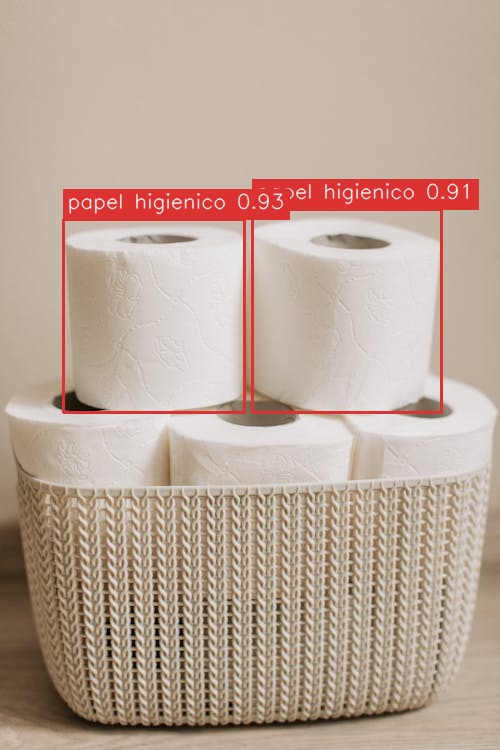
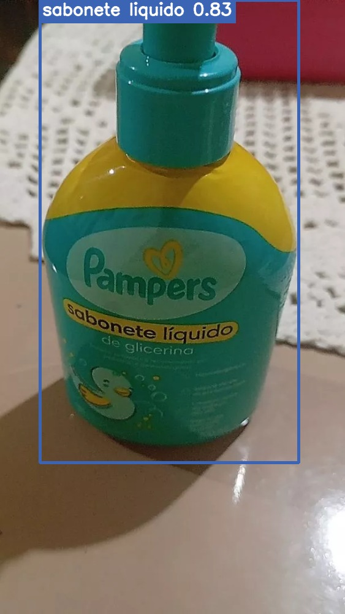
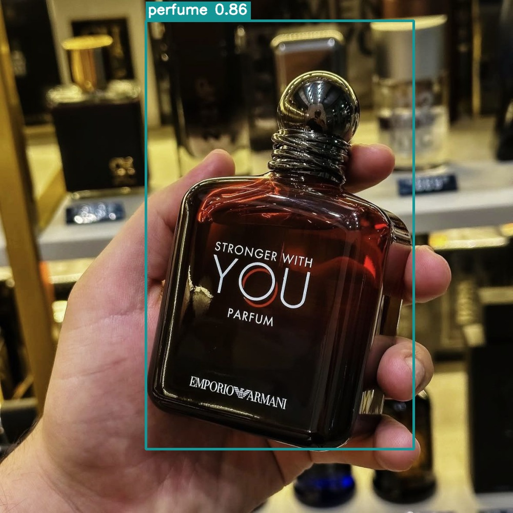

Desenvolvimento Web / Docker
StudyTrack — Controle de Estudos
O StudyTrack é uma aplicação web desenvolvida para registrar e
acompanhar sessões de estudo. A aplicação permite registrar a
matéria estudada, a data, a duração da sessão e observações.
O projeto foi desenvolvido utilizando
Python, Flask e PostgreSQL, com a aplicação web e o banco
de dados executados em containers separados utilizando
Docker e Docker Compose.
Tecnologias utilizadas
- Python
- Flask
- PostgreSQL 16
- HTML5 e CSS3
- Docker e Docker Compose
- Psycopg
- Python-dotenv
Arquitetura do projeto
O projeto utiliza dois containers principais. O
studytrack-web executa a aplicação Flask, enquanto o
studytrack-banco executa o PostgreSQL.
Os containers se comunicam por meio de uma rede Docker própria
chamada studytrack-rede. O banco utiliza um volume chamado
dados_postgres para garantir a persistência dos dados.
Banco de dados
O PostgreSQL possui a tabela estudos, responsável por
armazenar os registros das sessões de estudo.
Os principais campos são:
- id
- materia
- data
- duracao
- observacoes
Docker
- Dockerfile para criação da imagem da aplicação.
- Docker Compose para executar os serviços.
- Volume dados_postgres para persistência dos dados.
- Rede studytrack-rede para comunicação entre os containers.
- Variáveis de ambiente para configuração do PostgreSQL.
- Arquivo .dockerignore para controlar os arquivos enviados para a imagem.
Como executar
Com o Docker Desktop instalado e em execução, basta acessar a pasta do projeto pelo terminal e executar:
docker compose up -d --build
Depois, a aplicação pode ser acessada pelo navegador em http://localhost:5000.
Ver projeto no GitHub ↗UX/UI / Figma
Projeto LifeXP
O LifeXP é um projeto acadêmico de UX/UI no Figma, desenvolvido
por mim e por colegas do curso para o InovaWeek 2026,
evento de inovação da universidade. O projeto
ainda está em desenvolvimento e será apresentado durante o
evento.
Ele transforma o gerenciamento de tarefas em uma experiência
inspirada em RPGs. Para aumentar o engajamento, o usuário ganha XP
e moedas, sobe de nível e desbloqueia recompensas ao concluir
tarefas.
A interface foi adaptada para Desktop/Web, com um dashboard amplo
de progresso. A identidade visual é inspirada em jogos 16-bit, com
pixel art, dark mode e paleta em roxo e dourado.
As telas desenvolvidas incluem login, dashboard, gerenciador de
tarefas, loja de itens e perfil do jogador, além de sistema de XP,
conquistas e recompensas.
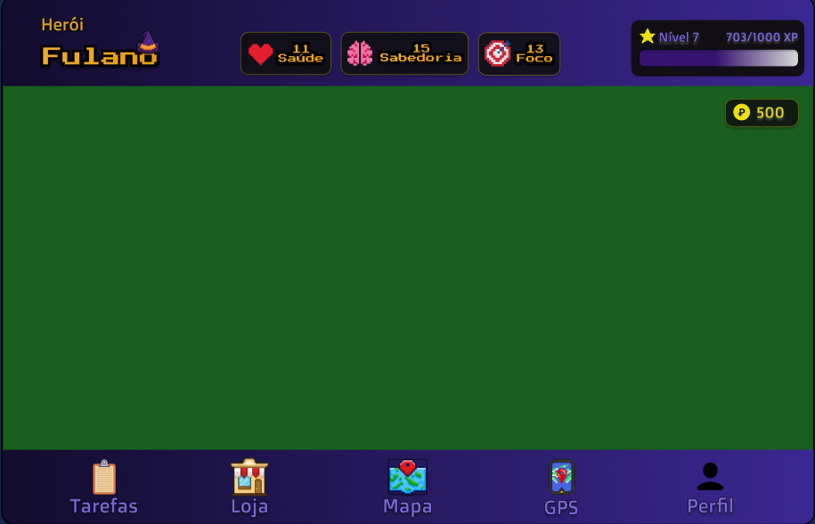
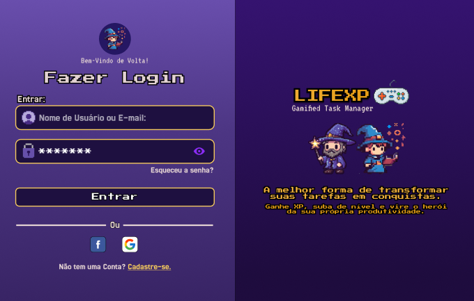
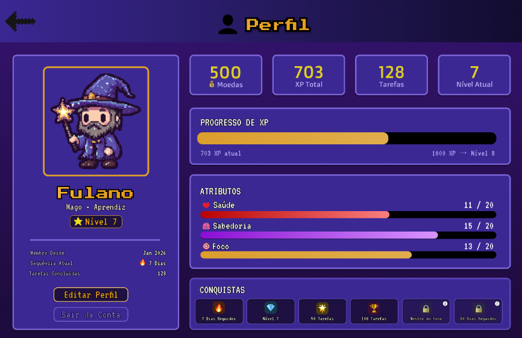
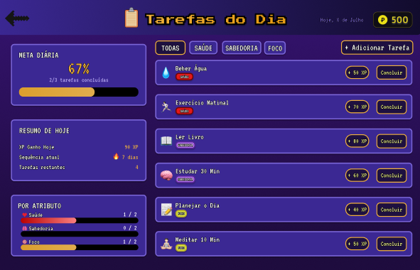
Como o projeto ainda está em desenvolvimento, o protótipo completo no Figma não está disponível.
Desenvolvimento web / HTML5, CSS3 e JS
Landing Page
Projeto desenvolvido durante a graduação para aplicar na prática
os conhecimentos de HTML5 e CSS3 na criação de uma landing page.
A página apresenta minha trajetória acadêmica e profissional,
habilidades, interesses e serviços de desenvolvimento web. Conta
com várias páginas, navegação entre seções, formulário de contato,
tabelas, links internos e externos e layout responsivo.
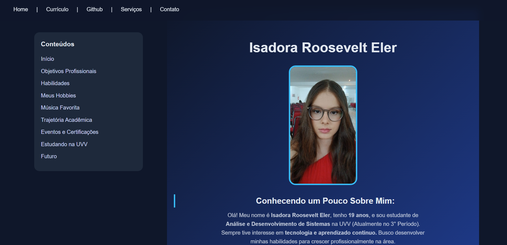
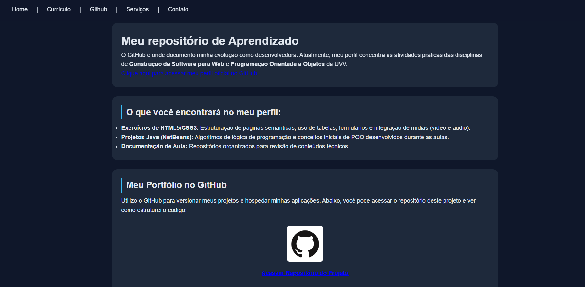
Projeto integrado / Figma
Projeto EcoVida
Durante a graduação em Análise e Desenvolvimento de Sistemas na
UVV, desenvolvemos um Projeto Integrado em parceria com a empresa
Fortes, com o objetivo de analisar um problema real e propor uma
solução utilizando tecnologia.
O projeto abordou a destinação dos resíduos gerados em ações
sociais, buscando conectar organizações, pontos de coleta e
recicladores por meio de uma solução digital, contribuindo para a
sustentabilidade e o impacto social.
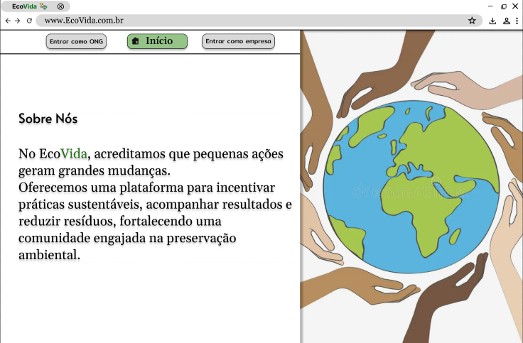
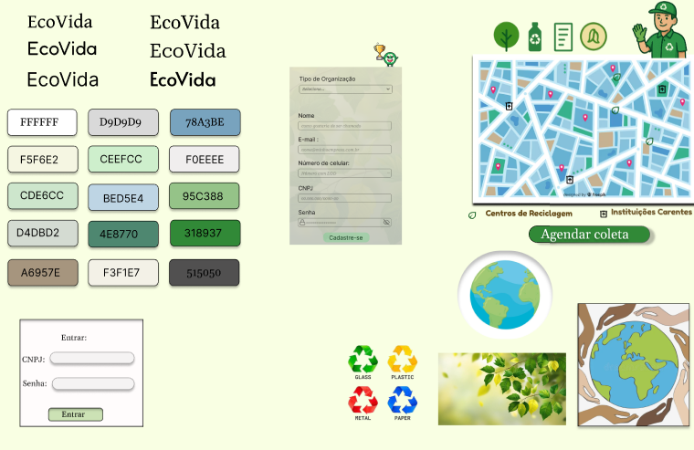
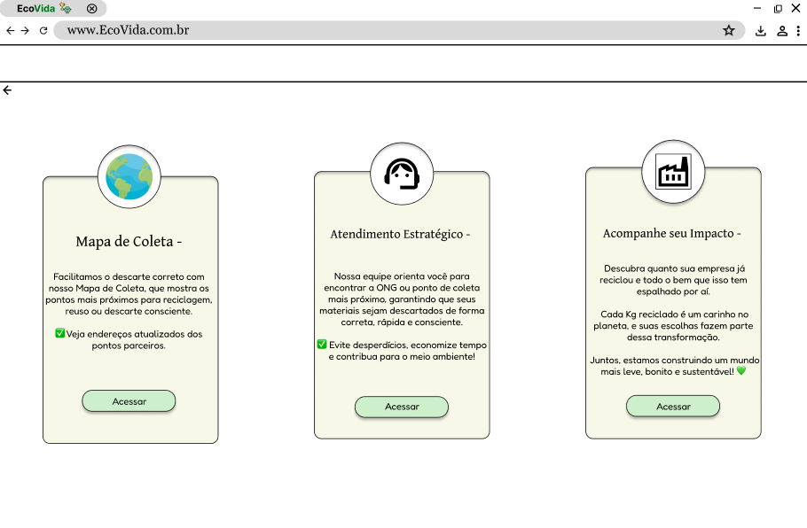
Ferramentas
O que eu uso
Contato
Vamos conversar?
Estou procurando meu primeiro estágio, presencial ou remoto.
isadoraeler19@gmail.com